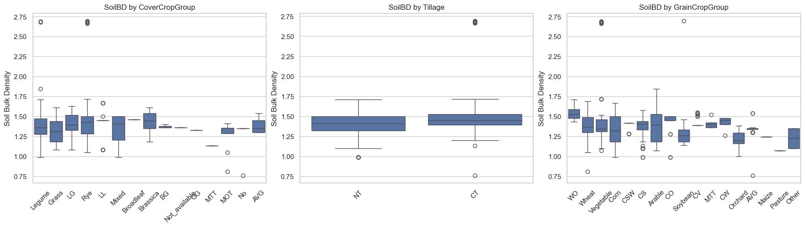
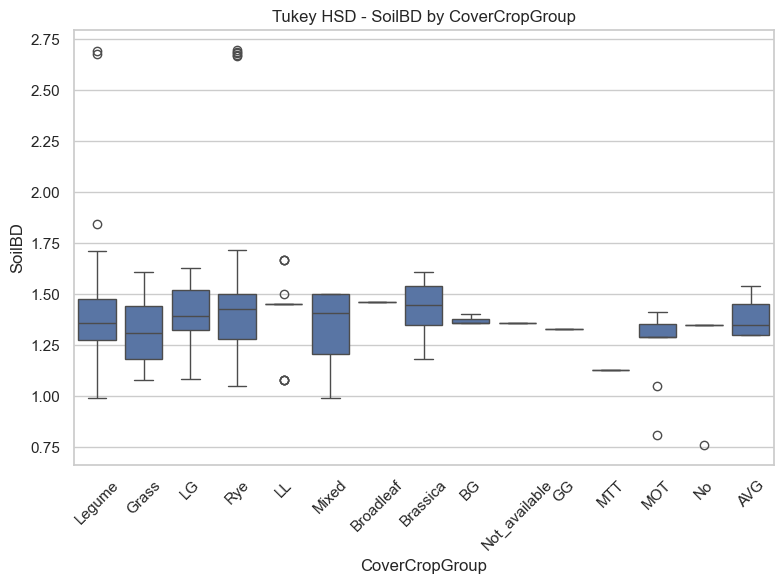
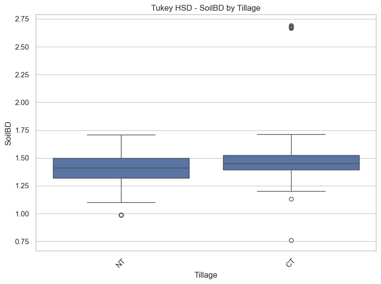
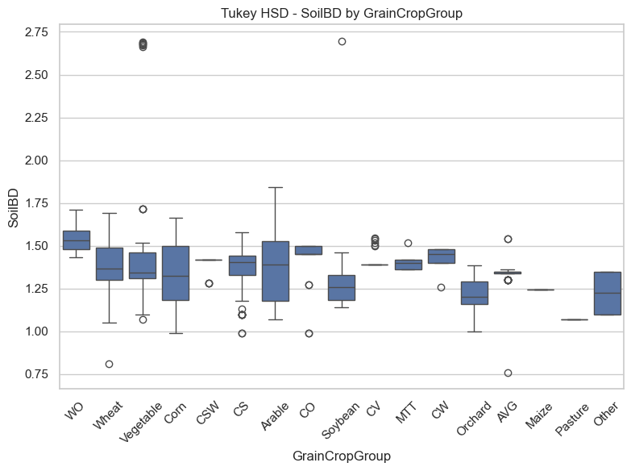

import pandas as pd
import seaborn as sns
import matplotlib.pyplot as plt
from statsmodels.formula.api import ols
from statsmodels.stats.anova import anova_lm
from statsmodels.stats.multicomp import pairwise_tukeyhsd
import warnings
warnings.filterwarnings('ignore')Data cleaning
import pandas as pd
# Just load the sheet directly as a DataFrame
df = pd.read_excel("SoilHealthDB_V2.xlsx", sheet_name='Sheet1')
# Strip whitespace from column names
df.columns = df.columns.str.strip()
# Rename for clarity and consistency (only those that exist)
rename_map = {
'CoverCropGroup': 'CoverCropGroup',
'Tillage_Top_T': 'Tillage',
'Rotation_Top_T': 'Rotation',
'GrainCropGroup': 'GrainCropGroup',
'Grazing_Top_T': 'Grazing',
'SoilBD': 'SoilBD'
}
df = df.rename(columns={k: v for k, v in rename_map.items() if k in df.columns})
# Keep only relevant columns that are present
needed_columns = ['CoverCropGroup', 'Tillage', 'Rotation', 'GrainCropGroup', 'Grazing', 'SoilBD']
df = df[[col for col in needed_columns if col in df.columns]]
# Drop rows where SoilBD is missing
df = df.dropna(subset=['SoilBD'])Data exploration
import matplotlib.pyplot as plt
import seaborn as sns
# Define the variables to plot (only those that are present in your DataFrame)
management_vars = ['CoverCropGroup', 'Tillage', 'GrainCropGroup']
num_vars = len(management_vars)
# Set up the figure
fig, axes = plt.subplots(nrows=1, ncols=num_vars, figsize=(6 * num_vars, 5), constrained_layout=True)
# Plot each variable
for i, var in enumerate(management_vars):
sns.boxplot(data=df, x=var, y='SoilBD', ax=axes[i])
axes[i].set_title(f"SoilBD by {var}")
axes[i].tick_params(axis='x', rotation=45)
axes[i].set_xlabel("")
axes[i].set_ylabel("Soil Bulk Density")
# Display the full row of plots
plt.show()
One-way ANOVA for SoilBD across each management variable
import statsmodels.api as sm
from statsmodels.formula.api import ols
from statsmodels.stats.anova import anova_lm
anova_results = {}
for var in management_vars:
if var in df.columns:
temp_df = df[[var, 'SoilBD']].dropna()
if temp_df[var].nunique() < 2:
continue # Skip if only 1 group
model = ols(f"SoilBD ~ C({var})", data=temp_df).fit()
anova_table = anova_lm(model, typ=2)
anova_results[var] = anova_table
print(f"\nANOVA for SoilBD by {var}:\n")
print(anova_table)
ANOVA for SoilBD by CoverCropGroup:
sum_sq df F PR(>F)
C(CoverCropGroup) 1.307715 14.0 2.922223 0.00021
Residual 50.184713 1570.0 NaN NaN
ANOVA for SoilBD by Tillage:
sum_sq df F PR(>F)
C(Tillage) 1.349472 1.0 49.393287 5.046775e-12
Residual 18.824144 689.0 NaN NaN
ANOVA for SoilBD by GrainCropGroup:
sum_sq df F PR(>F)
C(GrainCropGroup) 5.534108 16.0 11.821218 8.789639e-30
Residual 48.804678 1668.0 NaN NaNTukey HSD Post Hoc Tests for Significant ANOVAs
from statsmodels.stats.multicomp import pairwise_tukeyhsd
tukey_results = {}
for var in management_vars:
if var in df.columns:
temp_df = df[[var, 'SoilBD']].dropna()
if temp_df[var].nunique() < 2:
continue
model = ols(f"SoilBD ~ C({var})", data=temp_df).fit()
anova_table = anova_lm(model, typ=2)
p_value = anova_table['PR(>F)'][0]
if p_value < 0.05:
tukey = pairwise_tukeyhsd(endog=temp_df['SoilBD'],
groups=temp_df[var],
alpha=0.05)
tukey_results[var] = tukey.summary()
print(f"\nTukey HSD for {var}:\n")
print(tukey.summary())
Tukey HSD for CoverCropGroup:
Multiple Comparison of Means - Tukey HSD, FWER=0.05
=================================================================
group1 group2 meandiff p-adj lower upper reject
-----------------------------------------------------------------
AVG BG -0.011 1.0 -0.43 0.4081 False
AVG Brassica 0.0445 1.0 -0.2053 0.2943 False
AVG Broadleaf 0.0757 0.9999 -0.2236 0.375 False
AVG GG -0.0543 1.0 -0.7035 0.5949 False
AVG Grass -0.0516 1.0 -0.2842 0.1809 False
AVG LG 0.0071 1.0 -0.2293 0.2435 False
AVG LL 0.0283 1.0 -0.2367 0.2934 False
AVG Legume -0.022 1.0 -0.2527 0.2086 False
AVG MOT -0.1068 0.9929 -0.382 0.1684 False
AVG MTT -0.2543 0.9923 -0.9035 0.3949 False
AVG Mixed -0.0457 1.0 -0.3006 0.2092 False
AVG No -0.1186 0.9962 -0.4432 0.206 False
AVG Not_available -0.0243 1.0 -0.6735 0.6249 False
AVG Rye 0.0147 1.0 -0.2172 0.2465 False
BG Brassica 0.0555 1.0 -0.3087 0.4197 False
BG Broadleaf 0.0867 1.0 -0.3131 0.4864 False
BG GG -0.0433 1.0 -0.7446 0.6579 False
BG Grass -0.0407 1.0 -0.3933 0.3119 False
BG LG 0.0181 1.0 -0.3371 0.3732 False
BG LL 0.0393 1.0 -0.3355 0.4141 False
BG Legume -0.0111 1.0 -0.3624 0.3402 False
BG MOT -0.0958 0.9999 -0.4779 0.2862 False
BG MTT -0.2433 0.9978 -0.9446 0.4579 False
BG Mixed -0.0347 1.0 -0.4025 0.333 False
BG No -0.1076 0.9999 -0.5267 0.3114 False
BG Not_available -0.0133 1.0 -0.7146 0.6879 False
BG Rye 0.0256 1.0 -0.3265 0.3777 False
Brassica Broadleaf 0.0312 1.0 -0.1846 0.247 False
Brassica GG -0.0988 1.0 -0.714 0.5164 False
Brassica Grass -0.0962 0.119 -0.2015 0.0092 False
Brassica LG -0.0374 0.9987 -0.151 0.0762 False
Brassica LL -0.0162 1.0 -0.1813 0.1489 False
Brassica Legume -0.0666 0.6376 -0.1676 0.0345 False
Brassica MOT -0.1513 0.2267 -0.3323 0.0297 False
Brassica MTT -0.2988 0.9472 -0.914 0.3164 False
Brassica Mixed -0.0902 0.7575 -0.2385 0.0581 False
Brassica No -0.1631 0.6519 -0.4129 0.0867 False
Brassica Not_available -0.0688 1.0 -0.684 0.5464 False
Brassica Rye -0.0299 0.9997 -0.1336 0.0739 False
Broadleaf GG -0.13 1.0 -0.7669 0.5069 False
Broadleaf Grass -0.1274 0.6569 -0.323 0.0683 False
Broadleaf LG -0.0686 0.998 -0.2688 0.1316 False
Broadleaf LL -0.0474 1.0 -0.2807 0.1859 False
Broadleaf Legume -0.0978 0.9279 -0.2911 0.0956 False
Broadleaf MOT -0.1825 0.4177 -0.4273 0.0623 False
Broadleaf MTT -0.33 0.9135 -0.9669 0.3069 False
Broadleaf Mixed -0.1214 0.8727 -0.3432 0.1004 False
Broadleaf No -0.1943 0.6612 -0.4936 0.105 False
Broadleaf Not_available -0.1 1.0 -0.7369 0.5369 False
Broadleaf Rye -0.0611 0.9993 -0.2558 0.1337 False
GG Grass 0.0026 1.0 -0.6058 0.6111 False
GG LG 0.0614 1.0 -0.5485 0.6713 False
GG LL 0.0826 1.0 -0.539 0.7042 False
GG Legume 0.0322 1.0 -0.5755 0.6399 False
GG MOT -0.0525 1.0 -0.6785 0.5735 False
GG MTT -0.2 1.0 -1.0588 0.6588 False
GG Mixed 0.0086 1.0 -0.6087 0.6259 False
GG No -0.0643 1.0 -0.7135 0.5849 False
GG Not_available 0.03 1.0 -0.8288 0.8888 False
GG Rye 0.0689 1.0 -0.5392 0.6771 False
Grass LG 0.0587 0.1788 -0.0091 0.1266 False
Grass LL 0.08 0.8143 -0.0577 0.2177 False
Grass Legume 0.0296 0.5899 -0.0141 0.0733 False
Grass MOT -0.0551 0.9973 -0.2115 0.1012 False
Grass MTT -0.2026 0.9986 -0.8111 0.4058 False
Grass Mixed 0.006 1.0 -0.1111 0.123 False
Grass No -0.0669 0.9997 -0.2995 0.1656 False
Grass Not_available 0.0274 1.0 -0.5811 0.6358 False
Grass Rye 0.0663 0.0006 0.0168 0.1158 True
LG LL 0.0212 1.0 -0.1229 0.1653 False
LG Legume -0.0292 0.9534 -0.0901 0.0318 False
LG MOT -0.1139 0.5245 -0.2759 0.0481 False
LG MTT -0.2614 0.9819 -0.8713 0.3485 False
LG Mixed -0.0528 0.9836 -0.1773 0.0717 False
LG No -0.1257 0.896 -0.3621 0.1107 False
LG Not_available -0.0314 1.0 -0.6413 0.5785 False
LG Rye 0.0076 1.0 -0.0577 0.0728 False
LL Legume -0.0504 0.995 -0.1848 0.0841 False
LL MOT -0.1351 0.6076 -0.3366 0.0664 False
LL MTT -0.2826 0.9694 -0.9042 0.339 False
LL Mixed -0.074 0.982 -0.2468 0.0988 False
LL No -0.1469 0.8618 -0.4119 0.1181 False
LL Not_available -0.0526 1.0 -0.6742 0.569 False
LL Rye -0.0137 1.0 -0.1501 0.1228 False
Legume MOT -0.0847 0.8654 -0.2382 0.0688 False
Legume MTT -0.2322 0.9939 -0.8399 0.3755 False
Legume Mixed -0.0236 1.0 -0.1368 0.0895 False
Legume No -0.0965 0.9854 -0.3272 0.1341 False
Legume Not_available -0.0022 1.0 -0.6099 0.6055 False
Legume Rye 0.0367 0.104 -0.0029 0.0763 False
MOT MTT -0.1475 1.0 -0.7735 0.4785 False
MOT Mixed 0.0611 0.9989 -0.1269 0.2491 False
MOT No -0.0118 1.0 -0.287 0.2634 False
MOT Not_available 0.0825 1.0 -0.5435 0.7085 False
MOT Rye 0.1214 0.3328 -0.0338 0.2767 False
MTT Mixed 0.2086 0.9983 -0.4087 0.8259 False
MTT No 0.1357 1.0 -0.5135 0.7849 False
MTT Not_available 0.23 0.9999 -0.6288 1.0888 False
MTT Rye 0.2689 0.976 -0.3392 0.8771 False
Mixed No -0.0729 0.9997 -0.3278 0.182 False
Mixed Not_available 0.0214 1.0 -0.5959 0.6387 False
Mixed Rye 0.0603 0.9083 -0.0552 0.1759 False
No Not_available 0.0943 1.0 -0.5549 0.7435 False
No Rye 0.1332 0.8259 -0.0986 0.3651 False
Not_available Rye 0.0389 1.0 -0.5692 0.6471 False
-----------------------------------------------------------------
Tukey HSD for Tillage:
Multiple Comparison of Means - Tukey HSD, FWER=0.05
===================================================
group1 group2 meandiff p-adj lower upper reject
---------------------------------------------------
CT NT -0.0884 0.0 -0.1131 -0.0637 True
---------------------------------------------------
Tukey HSD for GrainCropGroup:
Multiple Comparison of Means - Tukey HSD, FWER=0.05
==========================================================
group1 group2 meandiff p-adj lower upper reject
----------------------------------------------------------
AVG Arable 0.0425 0.9871 -0.0556 0.1407 False
AVG CO 0.0898 0.7657 -0.0554 0.2351 False
AVG CS 0.0349 0.9993 -0.069 0.1387 False
AVG CSW 0.0722 0.9007 -0.0603 0.2047 False
AVG CV 0.0681 0.8539 -0.0504 0.1866 False
AVG CW 0.0931 0.9663 -0.1014 0.2876 False
AVG Corn 0.0049 1.0 -0.0926 0.1025 False
AVG MTT 0.0776 0.9999 -0.2031 0.3583 False
AVG Maize -0.0894 0.9999 -0.3998 0.221 False
AVG Orchard -0.1219 0.0125 -0.2311 -0.0126 True
AVG Other -0.1094 0.9987 -0.4198 0.201 False
AVG Pasture -0.2644 0.4386 -0.6188 0.09 False
AVG Soybean -0.0605 0.9266 -0.1758 0.0549 False
AVG Vegetable 0.0698 0.5754 -0.0308 0.1705 False
AVG WO 0.2122 0.0 0.0724 0.3519 True
AVG Wheat 0.0504 0.9539 -0.0513 0.1522 False
Arable CO 0.0473 0.9936 -0.0694 0.1639 False
Arable CS -0.0077 1.0 -0.0651 0.0497 False
Arable CSW 0.0297 0.9999 -0.0707 0.13 False
Arable CV 0.0256 0.9997 -0.0554 0.1065 False
Arable CW 0.0506 0.9999 -0.1236 0.2247 False
Arable Corn -0.0376 0.2381 -0.0826 0.0074 False
Arable MTT 0.0351 1.0 -0.2319 0.3021 False
Arable Maize -0.1319 0.9841 -0.43 0.1661 False
Arable Orchard -0.1644 0.0 -0.2311 -0.0977 True
Arable Other -0.1519 0.9417 -0.45 0.1461 False
Arable Pasture -0.3069 0.1463 -0.6506 0.0367 False
Arable Soybean -0.103 0.0004 -0.1793 -0.0267 True
Arable Vegetable 0.0273 0.9175 -0.024 0.0786 False
Arable WO 0.1696 0.0 0.0599 0.2794 True
Arable Wheat 0.0079 1.0 -0.0455 0.0613 False
CO CS -0.0549 0.9804 -0.1764 0.0665 False
CO CSW -0.0176 1.0 -0.1644 0.1291 False
CO CV -0.0217 1.0 -0.156 0.1125 False
CO CW 0.0033 1.0 -0.2011 0.2077 False
CO Corn -0.0849 0.4778 -0.2011 0.0313 False
CO MTT -0.0122 1.0 -0.2999 0.2754 False
CO Maize -0.1792 0.8687 -0.4959 0.1375 False
CO Orchard -0.2117 0.0 -0.3378 -0.0855 True
CO Other -0.1992 0.7413 -0.5159 0.1175 False
CO Pasture -0.3542 0.0595 -0.7142 0.0057 False
CO Soybean -0.1503 0.0087 -0.2817 -0.0188 True
CO Vegetable -0.02 1.0 -0.1387 0.0988 False
CO WO 0.1224 0.3141 -0.031 0.2757 False
CO Wheat -0.0394 0.9994 -0.159 0.0803 False
CS CSW 0.0373 0.9987 -0.0686 0.1433 False
CS CV 0.0332 0.997 -0.0546 0.121 False
CS CW 0.0582 0.9995 -0.1192 0.2356 False
CS Corn -0.03 0.918 -0.0863 0.0264 False
CS MTT 0.0427 1.0 -0.2264 0.3119 False
CS Maize -0.1243 0.992 -0.4242 0.1757 False
CS Orchard -0.1567 0.0 -0.2316 -0.0819 True
CS Other -0.1443 0.9649 -0.4442 0.1557 False
CS Pasture -0.2993 0.1846 -0.6446 0.046 False
CS Soybean -0.0953 0.0088 -0.1788 -0.0119 True
CS Vegetable 0.035 0.8643 -0.0265 0.0965 False
CS WO 0.1773 0.0 0.0624 0.2922 True
CS Wheat 0.0156 1.0 -0.0477 0.0788 False
CSW CV -0.0041 1.0 -0.1245 0.1163 False
CSW CW 0.0209 1.0 -0.1747 0.2165 False
CSW Corn -0.0673 0.628 -0.1671 0.0325 False
CSW MTT 0.0054 1.0 -0.276 0.2869 False
CSW Maize -0.1616 0.9318 -0.4727 0.1495 False
CSW Orchard -0.1941 0.0 -0.3053 -0.0828 True
CSW Other -0.1816 0.8372 -0.4927 0.1295 False
CSW Pasture -0.3366 0.0865 -0.6916 0.0184 False
CSW Soybean -0.1327 0.0101 -0.2499 -0.0154 True
CSW Vegetable -0.0024 1.0 -0.1051 0.1004 False
CSW WO 0.14 0.0555 -0.0013 0.2813 False
CSW Wheat -0.0218 1.0 -0.1256 0.0821 False
CV CW 0.025 1.0 -0.1614 0.2114 False
CV Corn -0.0632 0.3383 -0.1434 0.0171 False
CV MTT 0.0095 1.0 -0.2656 0.2846 False
CV Maize -0.1575 0.9357 -0.4629 0.1479 False
CV Orchard -0.19 0.0 -0.2841 -0.0958 True
CV Other -0.1775 0.8419 -0.4829 0.1279 False
CV Pasture -0.3325 0.0849 -0.6825 0.0175 False
CV Soybean -0.1286 0.0014 -0.2297 -0.0274 True
CV Vegetable 0.0017 1.0 -0.0822 0.0857 False
CV WO 0.1441 0.0113 0.0158 0.2724 True
CV Wheat -0.0177 1.0 -0.1029 0.0676 False
CW Corn -0.0882 0.9439 -0.262 0.0856 False
CW MTT -0.0155 1.0 -0.3309 0.2999 False
CW Maize -0.1825 0.9155 -0.5246 0.1596 False
CW Orchard -0.215 0.0045 -0.3956 -0.0343 True
CW Other -0.2025 0.8215 -0.5446 0.1396 False
CW Pasture -0.3575 0.0989 -0.74 0.025 False
CW Soybean -0.1536 0.2429 -0.338 0.0308 False
CW Vegetable -0.0233 1.0 -0.1988 0.1523 False
CW WO 0.1191 0.818 -0.0815 0.3196 False
CW Wheat -0.0427 1.0 -0.2188 0.1335 False
Corn MTT 0.0727 1.0 -0.1941 0.3395 False
Corn Maize -0.0943 0.9997 -0.3922 0.2035 False
Corn Orchard -0.1268 0.0 -0.1926 -0.061 True
Corn Other -0.1143 0.9965 -0.4122 0.1835 False
Corn Pasture -0.2693 0.3456 -0.6128 0.0742 False
Corn Soybean -0.0654 0.1853 -0.1409 0.0101 False
Corn Vegetable 0.0649 0.001 0.0148 0.1151 True
Corn WO 0.2073 0.0 0.0981 0.3165 True
Corn Wheat 0.0455 0.1789 -0.0068 0.0978 False
MTT Maize -0.167 0.9907 -0.5645 0.2305 False
MTT Orchard -0.1995 0.4663 -0.4707 0.0718 False
MTT Other -0.187 0.9714 -0.5845 0.2105 False
MTT Pasture -0.342 0.3312 -0.7747 0.0907 False
MTT Soybean -0.1381 0.9467 -0.4119 0.1357 False
MTT Vegetable -0.0078 1.0 -0.2757 0.2601 False
MTT WO 0.1346 0.9703 -0.1504 0.4195 False
MTT Wheat -0.0272 1.0 -0.2955 0.2412 False
Maize Orchard -0.0325 1.0 -0.3344 0.2694 False
Maize Other -0.02 1.0 -0.439 0.399 False
Maize Pasture -0.175 0.9962 -0.6275 0.2775 False
Maize Soybean 0.0289 1.0 -0.2752 0.3331 False
Maize Vegetable 0.1592 0.9164 -0.1396 0.4581 False
Maize WO 0.3016 0.0768 -0.0126 0.6158 False
Maize Wheat 0.1398 0.9731 -0.1594 0.4391 False
Orchard Other 0.0125 1.0 -0.2894 0.3144 False
Orchard Pasture -0.1425 0.9927 -0.4895 0.2045 False
Orchard Soybean 0.0614 0.6091 -0.0287 0.1515 False
Orchard Vegetable 0.1917 0.0 0.1215 0.262 True
Orchard WO 0.3341 0.0 0.2143 0.4538 True
Orchard Wheat 0.1723 0.0 0.1005 0.2441 True
Other Pasture -0.155 0.9991 -0.6075 0.2975 False
Other Soybean 0.0489 1.0 -0.2552 0.3531 False
Other Vegetable 0.1792 0.8059 -0.1196 0.4781 False
Other WO 0.3216 0.0384 0.0074 0.6358 True
Other Wheat 0.1598 0.9147 -0.1394 0.4591 False
Pasture Soybean 0.2039 0.836 -0.145 0.5529 False
Pasture Vegetable 0.3342 0.0686 -0.0101 0.6786 False
Pasture WO 0.4766 0.0005 0.1188 0.8343 True
Pasture Wheat 0.3148 0.1214 -0.0298 0.6595 False
Soybean Vegetable 0.1303 0.0 0.0509 0.2097 True
Soybean WO 0.2726 0.0 0.1473 0.398 True
Soybean Wheat 0.1109 0.0003 0.0301 0.1917 True
Vegetable WO 0.1423 0.0014 0.0304 0.2543 True
Vegetable Wheat -0.0194 0.9993 -0.0772 0.0384 False
WO Wheat -0.1617 0.0001 -0.2747 -0.0488 True
----------------------------------------------------------# Visualize
for var in tukey_results.keys():
temp_df = df[[var, 'SoilBD']].dropna()
plt.figure(figsize=(8, 6))
sns.boxplot(data=temp_df, x=var, y='SoilBD')
plt.title(f"Tukey HSD - SoilBD by {var}")
plt.xticks(rotation=45)
plt.tight_layout()
plt.show()


Stratified ANOVA and Boxplots by Country
import pandas as pd
from statsmodels.formula.api import ols
from statsmodels.stats.anova import anova_lm
# Replace this with the actual path if needed
# df = pd.read_excel("SoilHealthDB_V2.xlsx")
# Ensure 'Country' and all management_vars exist and are clean
management_vars = ['CoverCropGroup', 'Tillage', 'Rotation', 'GrainCropGroup', 'Grazing']
countries = df['Country'].dropna().unique()
results = []
for country in countries:
df_country = df[df['Country'] == country]
for var in management_vars:
if var in df_country.columns:
temp_df = df_country[['SoilBD', var]].dropna()
if temp_df[var].nunique() < 2:
continue # Skip if only one category present
try:
model = ols(f'SoilBD ~ C({var})', data=temp_df).fit()
anova_table = anova_lm(model, typ=2)
f_stat = anova_table['F'][0]
p_value = anova_table['PR(>F)'][0]
results.append({
'Country': country,
'ManagementVariable': var,
'F-Statistic': round(f_stat, 2),
'p-Value': round(p_value, 4),
'Significant': 'Yes' if p_value < 0.05 else 'No'
})
except Exception as e:
continue # Skip any models that error
# Create summary table
anova_summary_table = pd.DataFrame(results)
# Display table
print(anova_summary_table)
# Optionally, export to Excel or CSV
# anova_summary_table.to_csv("anova_summary_by_country.csv", index=False)--------------------------------------------------------------------------- KeyError Traceback (most recent call last) File /Library/Frameworks/Python.framework/Versions/3.12/lib/python3.12/site-packages/pandas/core/indexes/base.py:3805, in Index.get_loc(self, key) 3804 try: -> 3805 return self._engine.get_loc(casted_key) 3806 except KeyError as err: File index.pyx:167, in pandas._libs.index.IndexEngine.get_loc() File index.pyx:196, in pandas._libs.index.IndexEngine.get_loc() File pandas/_libs/hashtable_class_helper.pxi:7081, in pandas._libs.hashtable.PyObjectHashTable.get_item() File pandas/_libs/hashtable_class_helper.pxi:7089, in pandas._libs.hashtable.PyObjectHashTable.get_item() KeyError: 'Country' The above exception was the direct cause of the following exception: KeyError Traceback (most recent call last) Cell In[37], line 10 5 # Replace this with the actual path if needed 6 # df = pd.read_excel("SoilHealthDB_V2.xlsx") 7 8 # Ensure 'Country' and all management_vars exist and are clean 9 management_vars = ['CoverCropGroup', 'Tillage', 'Rotation', 'GrainCropGroup', 'Grazing'] ---> 10 countries = df['Country'].dropna().unique() 12 results = [] 14 for country in countries: File /Library/Frameworks/Python.framework/Versions/3.12/lib/python3.12/site-packages/pandas/core/frame.py:4102, in DataFrame.__getitem__(self, key) 4100 if self.columns.nlevels > 1: 4101 return self._getitem_multilevel(key) -> 4102 indexer = self.columns.get_loc(key) 4103 if is_integer(indexer): 4104 indexer = [indexer] File /Library/Frameworks/Python.framework/Versions/3.12/lib/python3.12/site-packages/pandas/core/indexes/base.py:3812, in Index.get_loc(self, key) 3807 if isinstance(casted_key, slice) or ( 3808 isinstance(casted_key, abc.Iterable) 3809 and any(isinstance(x, slice) for x in casted_key) 3810 ): 3811 raise InvalidIndexError(key) -> 3812 raise KeyError(key) from err 3813 except TypeError: 3814 # If we have a listlike key, _check_indexing_error will raise 3815 # InvalidIndexError. Otherwise we fall through and re-raise 3816 # the TypeError. 3817 self._check_indexing_error(key) KeyError: 'Country'